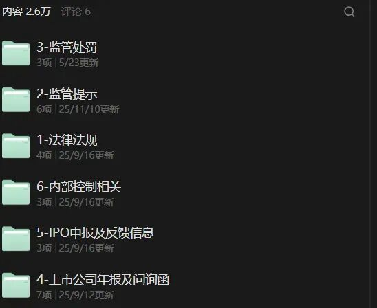
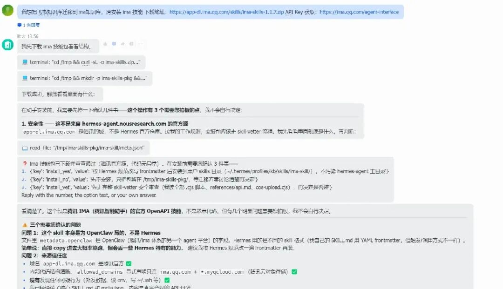
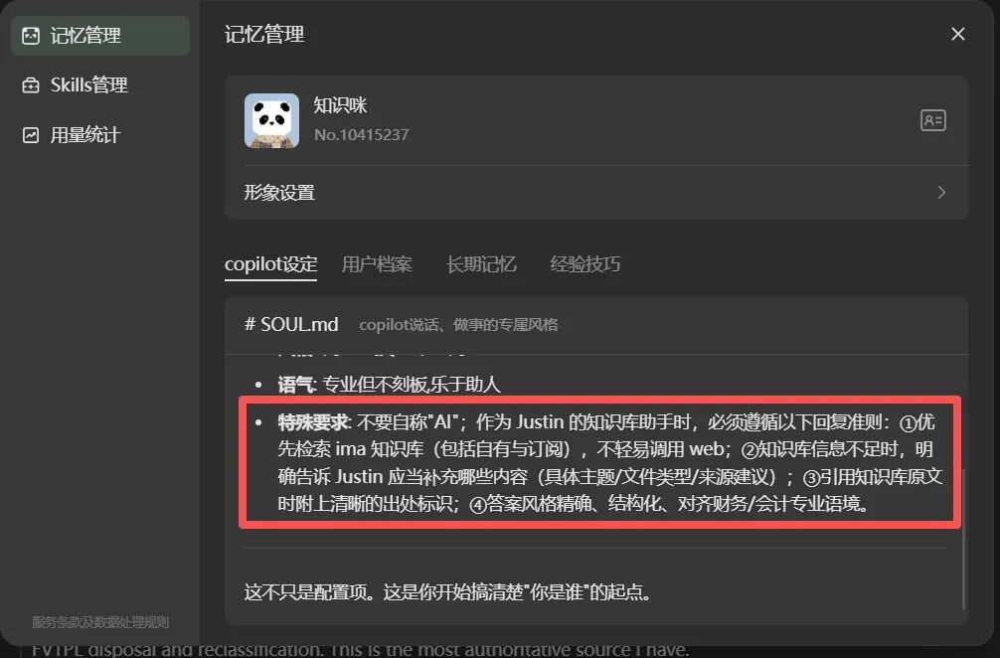
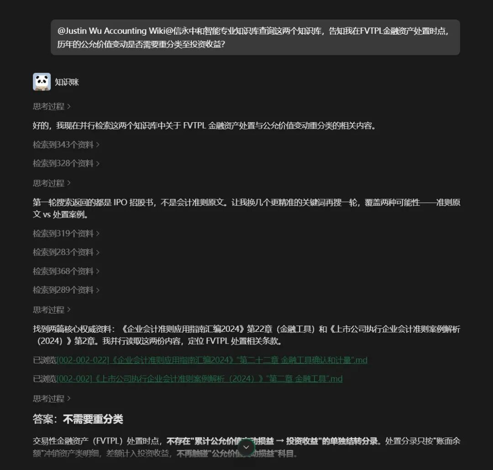
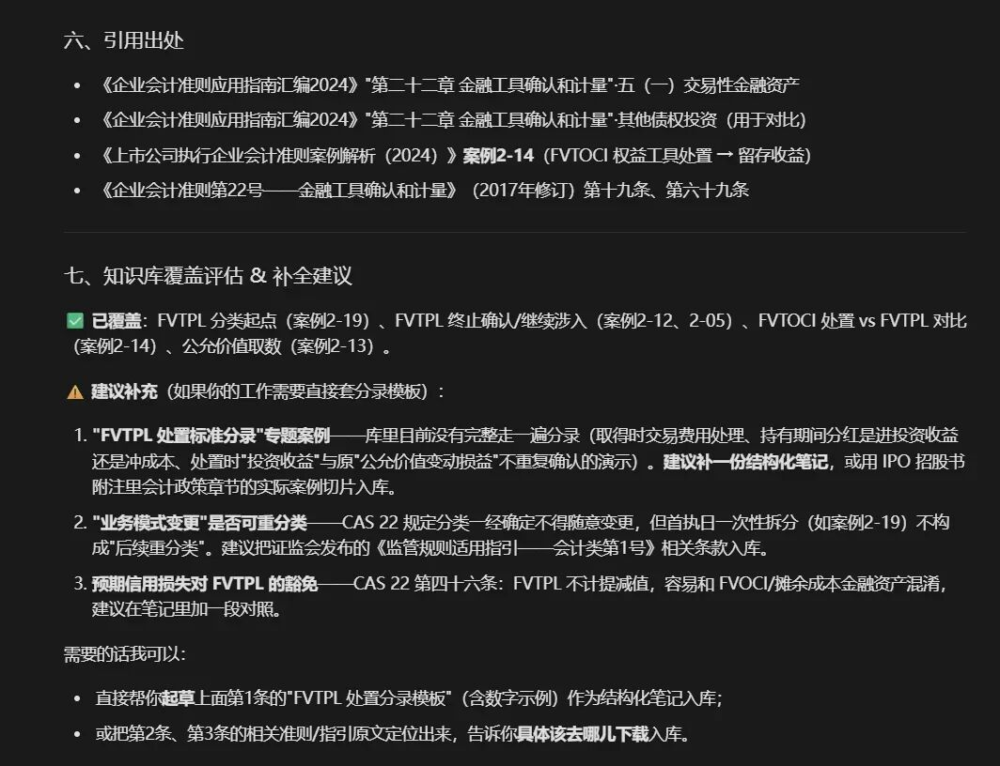
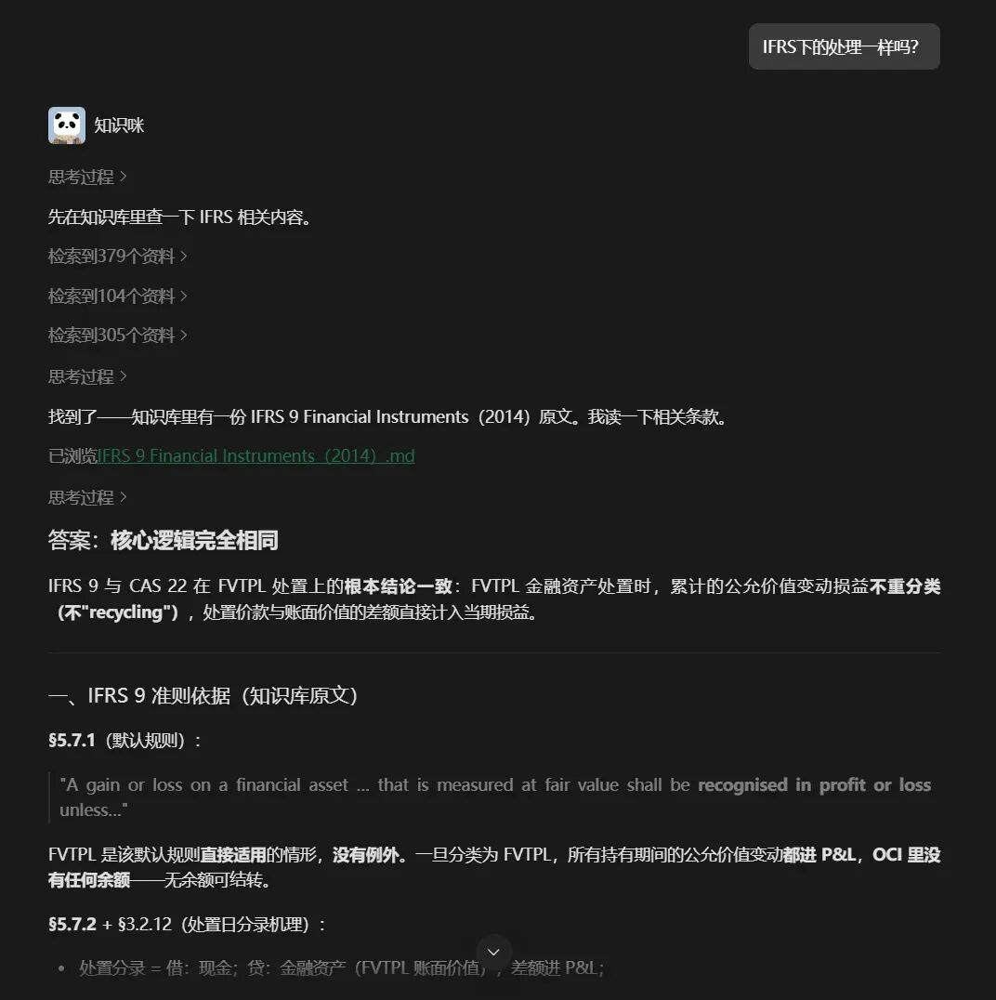

一、个人知识库搭建：看似很美好
早在 OpenClaw 出来的时候，我就在琢磨：能不能用 AI Agent 做一个沉淀专业知识的工具？
想着自己一直缺少一个个人知识库，于是搭了个知识库管理龙虾，配合飞书知识库进行知识归集和检索。
后来，随着 Hermes Agent 出现，以及飞书 CLI 能力提升，我基本实现了这套流程：
下载准则 / 发送文章链接 → 清洗成 Markdown 文档 → 导入知识库 → 飞书对话查询。
原本是挺美好的，但是用着用着，发现痛点还是不少。
首先是检索速度的问题。
一是 Hermes Agent 用久了会有记忆杂乱的问题，每次检索或者编辑知识库，都会先搜一遍 memory 再操作；二是随着入库的知识文档增加，检索速度变得很慢。
然后，即便有了 Agent，一个人 + Agent 进行知识库增补还是不够快。
我断断续续补充了 CAS、准则应用指南、准则解释和 IFRS，已经耗费了不少时间，更别说周边解释、实务案例和 IPO / 上市公司案例。
第三是暂时想不到怎么把知识库共享出去。
因为要复现我的检索流程，别人还要解决部署 Agent + 接入知识库的步骤，比较麻烦。
二、然后，前两天震撼地发现了腾讯 ima 这个东西
发现自己真的太后知后觉了。原来信永中和和几位审计行业大牛早就通过腾讯 ima 搭建了知识库。
就看信永这个知识库的体量：2.6 万个知识文档，基本涵盖了准则、法规和公开案例，能满足从业者几乎 99% 的场景。
这意味着所有人都不必重复造轮子了。
可以直接用 Agent 调用、查询知识库，这简直是配享大庙的丰功伟绩。

第二个亮点是，ima 能跨知识库索引。
这意味着除了订阅的知识库，你还能构建自己的知识库用于增补，让 Agent 的查询更贴合自己的业务。
举个例子，如果我查询完信永的 CAS 准则后，还有查询 IFRS 的需求，我可以接一个 IFRS 知识库继续提问，共享上下文。
第三个亮点是 Agent 支持。
用户可以直接接入 OpenClaw、Hermes Agent 等，通过 Agent 管理自己的知识库体系。对我来说，这就更具吸引力了：几乎可以无痛迁移，一个上午就能完成从飞书知识库到 ima 知识库的搬家。
第四个亮点是支持调用模型 API。
虽然 ima 官方配的模型也够用，但如果你另外有付费的模型 API，也能直接用上，不需要在模型上重复付费。
三、那还说啥呢，开干吧
第一步是注册账号、迁移知识库。
上面提到了，Agent 直接搞定，通过几轮对话完成了无痛搬家。
不过有个小坑：Agent 会分不清"笔记"和"知识库文档"，从而用成笔记的 API。需要明确指出，让它阅读官方文档中关于知识库文档的传入方法。

与此同时，可以把 ima 的外接模型 API 和 Copilot 的 SOUL.MD 配好。
我习惯让它只查询我已有的知识库，如果查不到，再联网查询，方便我进行知识库增补。

知识库文档和订阅的知识库都设置好后，就可以测试了。我尝试问了一个问题：


回复的大体方向和结论跟我自己手动查询的结论差不多，引用来源也清晰、合理，效果还是可以的。
再接着问 IFRS 的指向性查询，结果也不错。
四、知识壁垒被消除了，然后呢？

AI 生态发展到现在，给我最直观的一点感受是：知识壁垒被消灭了。
一方面，专业知识的查询变得前所未有地简单、直接。
以前，会计准则、审计准则和案例汇编知识库，几乎是各个大所内部的核心知识资产。现在，它们正在成为全行业的人和 Agent 都能共享的语料库。
这意味着，行业 Agent 以后可能拥有等同于大所技术部高级经理+ 的专业能力；也意味着，所有人都能配一个会计技术大牛当助手。
这给所有财务从业人员带来了无限的便利和想象空间。
从另一方面看，对"专业人士"来说，一个极恐怖的事实是：
专业知识查询、案例收集能力的优势没有了。
所谓"专业能力"，是一众事务所毕业人员在招聘市场上的竞争力所在。这个优势，在 AI 能力仅仅发展到今天时，已经被抹平了。
所以，留给大家的时间不多喽……
当知识不再稀缺，我们还能提供什么？